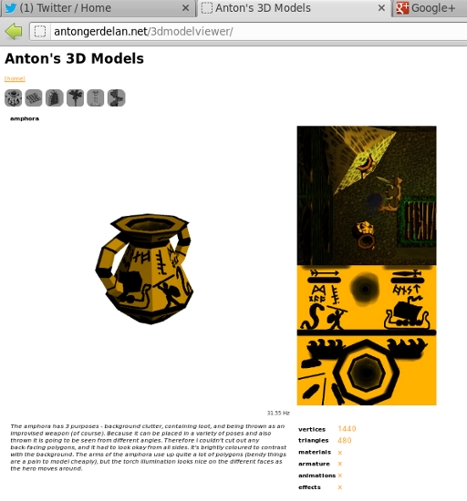

[index]
Anton's Research Ramblings
5 July 2012
3d models portfolio viewer
I wrote a little show-case tool to view different 3D models. An animated .gif might
be okay, but I think that I will make it interactive and integrate some "play animation 2" type of buttons. I have
to develop a decent animation system for hardware skinning anyway. It's quite a lot of work putting the content
together, but that's the same for all websites I guess.

The web page allows you to browse a selection of 3d models, and display some additional information of
interest. I will add some sort of animations support.
future activities
-
look at graphs and charts in webgl. is it easier to use javascript or php for 2d charts? what cool 3d
visualisations can i do?
-
get some sort of audio API working to go with the talking head.
-
make a hardware skinning demo. I'll need to come up with a custom JSON format for storing animations.
-
I should really come back and finish that 3D picking demo(s)...